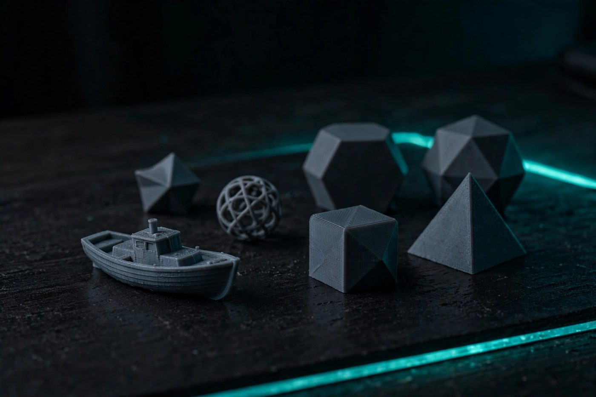

Your first five prints: easy projects that teach the basics

The fastest way to learn 3D printing is not to read about it — it's to print. But printing a nine-hour helmet as your first project teaches you nothing except how to watch plastic fail. These five projects are small, fast, and each one teaches a specific skill you'll use forever. Print them in order, in PLA.
Print 1: A calibration cube
The humble 20mm calibration cube is the beginner's mirror. Print one and you learn to read your printer: measure it with calipers and check the dimensions are right; look at the corners for bulging; look at the faces for ringing (ghosted lines after direction changes). What it teaches: that the printer has settings that matter, and how to look at a print critically instead of just admiring that it exists. Keep your first cube. A month later, print another and compare — the improvement is the best motivation there is.
Print 2: A bed-leveling test pattern
Search any model repository for a first-layer or bed-leveling test — a pattern of squares or lines that covers the bed. A single first layer, ten minutes of printing. What it teaches: what a correct first layer looks like. Lines should be slightly squished together, not round and separated (nozzle too high) or thin and smeared (nozzle too low). Most print failures are first-layer failures wearing a costume; learning to diagnose this one layer fixes a disproportionate share of everything else.
Print 3: A cable organizer or desk hook
Pick something simple and useful: a cable clip, a headphone hook, a drawer divider. A small functional object with a real job on your desk. What it teaches: bed adhesion and part orientation. You'll learn which way to orient a part on the build plate (flat sides down), what a brim or raft does for grip, and the deeply satisfying feeling of a printed object doing a real job. Print spares now, because you'll want them later — and because reprints teach you whether your settings are repeatable.
Print 4: An overhang and bridge test
Printers can't print in mid-air — overhanging plastic droops, and spans ("bridges") between two points test how well your printer cools. Dedicated test models print a staircase of overhang angles and a series of bridges. What it teaches: the physical limits of your machine. Every printer has an angle beyond which it needs supports; knowing yours means you can orient real models to avoid supports entirely, which saves time and filament and improves finish. This is the print that turns "I hope this works" into "I know this will work."
Print 5: A tolerance gauge or snap-fit box
A tolerance gauge — a set of pegs and holes in shrinking clearances — or a simple box with a press-fit lid. What it teaches: that printed plastic has a real-world size, and that size depends on your printer, your filament, and your settings. A 10mm hole designed in software is not exactly 10mm of plastic. Learning your printer's tolerance is what unlocks functional prints that fit together: hinges, lids, replacement parts for real objects. It also teaches humility about shrinkage — PLA shrinks a little; other filaments shrink more.
How to find models
You don't need to design anything yet. Large free model repositories exist online — search for the project names above and you'll find dozens of versions of each. Look for models with photos of actual printed results and comments from other makers; a model with twenty successful prints in the comments is a safer bet than a beautiful render with no proof. Download the file (usually STL), open it in your slicer, and print.
A note on slicing
Your slicer — the software that turns a 3D model into printer instructions — is half the craft. For these five prints, the defaults are fine. Resist the urge to tweak every setting; print the defaults first, observe, then change one thing at a time. When a print fails, that's data, not disaster. Write down what you changed and what happened. The notebook (or notes app) of failed prints becomes your most valuable tool.
What comes after five
Once you've printed these, you can do anything a beginner can do: read a first layer, orient a part, judge overhangs, and account for tolerances. From here, the natural next steps are printing a part you designed yourself (simple parametric CAD tools have generous free tiers), and the inevitable — learning to fix failed prints, which is the next guide on this site.